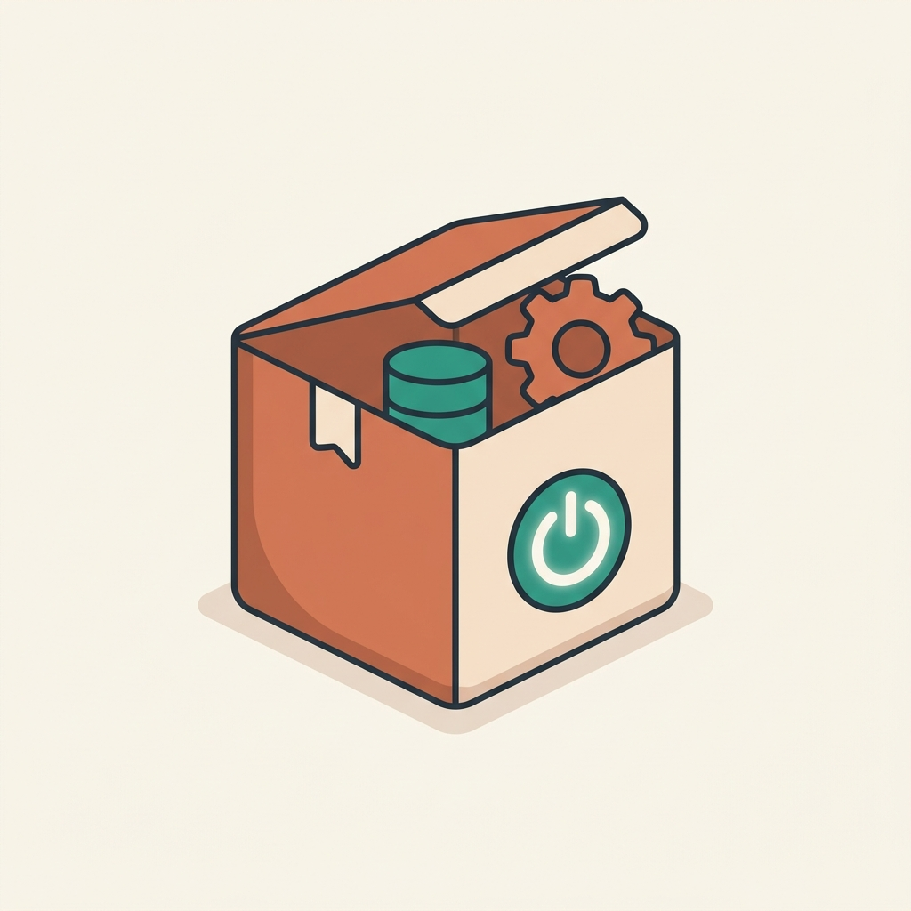
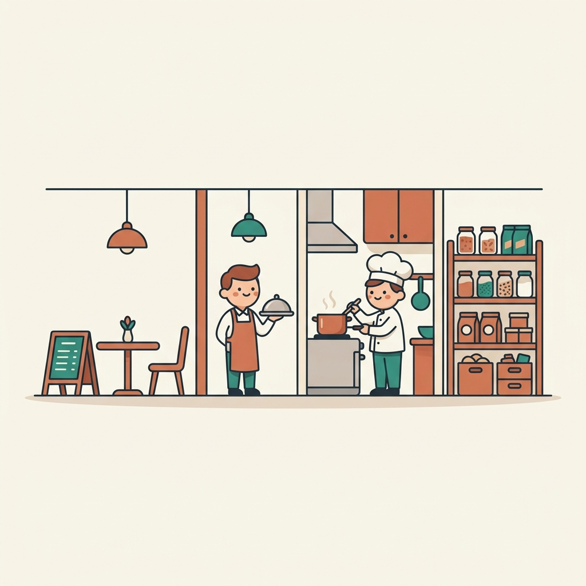
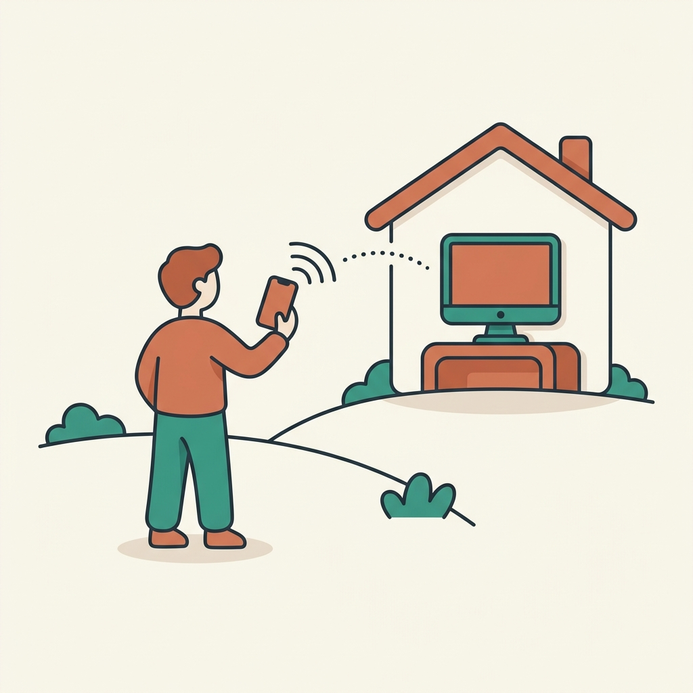
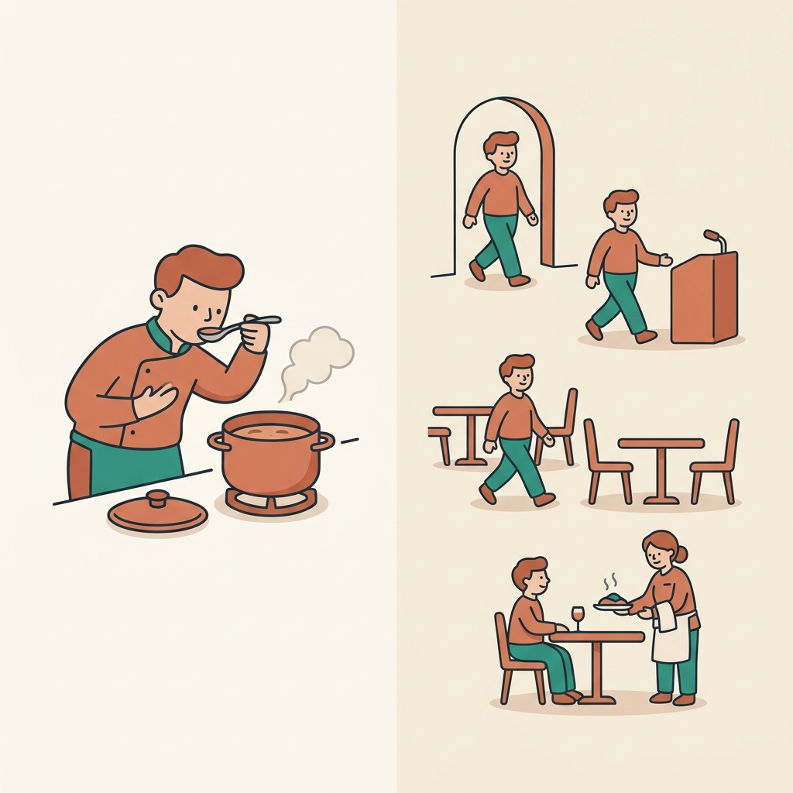
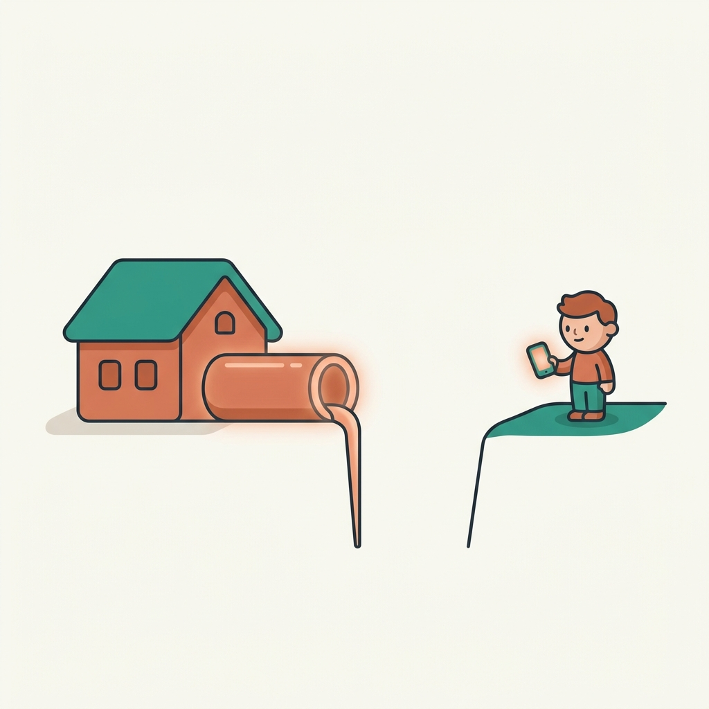

今日のゴール
むずかしいサーバー契約や公開設定はしません。「サーバー」は各自のPCの中で一時的に動かすだけ＋ngrokで公開の住所を一本だけ通します。
| 時間の目安 | 内容 |
|---|---|
| 準備 | アプリ・ログイン・Docker・ngrok（Windowsはgitも） |
| 最低限の地図 | 言葉と仕組みを“使う直前に1個ずつ” |
| ハンズオン① | AIにブラウザで調べ物 → 表（CSV）に |
| ハンズオン② | 予約サイトを作って ngrok で公開（主役） |
| まとめ | 自分のアイデアを試す（idea-to-mockup） |
1. 準備：今日使う道具をそろえる
① 事前に各自で済ませておくこと（詰まりやすい3点＋Win）
- 有料のClaudeプラン（Pro / Max / Team / Enterprise のどれか）。※無料プランではCodeタブが使えません。
- Claudeアカウントでログインできる状態。
- ngrokのアカウント＋authtoken（取り方は下の④）。
- Windowsの人は Git も。これは git を使うためではなく、Claude Code がコマンドを動かす土台として必要（Macは多くが標準装備）。Git for Windows を入れておく。
② Claude Desktop アプリを入れる
今日はターミナル（黒い画面）を使いません。Claude Desktop アプリの「Code」タブから操作します。
- Mac：公式サイトから Claude Desktop（Apple Silicon / Intel 兼用）をダウンロードしてインストール。
- Windows：x64 版（または ARM64 版）のインストーラをダウンロードしてインストール。※ Linux はDesktop非対応。
- アプリを起動 → Anthropicアカウントでサインイン → 上部の 「Code」タブを開く。
- 使うとき：Local を選ぶ → Select folder（作業フォルダ）を選ぶ → やりたいことを文章で書く → 出てきた差分（diff）どこが変わるかの表示を見て Accept / Reject。
Desktop には Claude Code が同梱なので、Node.js や CLI を別途入れる必要はありません（ただし Docker は別途必要）。
③ Docker Desktop を入れて、起動しておく

Dockerアプリを“箱（コンテナ）”ごと、そのまま動かす仕組み
- ふつう、ソフトは使う前に面倒なインストールが必要。Dockerなら必要なものが箱に入った状態で来て、動かすだけ。
- 今日は、ハンズオン②の予約システムで データベース（PostgreSQL）や Go を動かすのに使います。
- Docker Desktop を公式サイトからインストールし、アプリを開いて起動したままにしておく（閉じると中の箱も止まります）。
※ Node.js / npm は Claude が各自のPCに入れてくれるので、そちらはDocker不要です。
④ ngrok の authtoken を取る
- ngrokにサインアップ（無料）。
- ダッシュボードの Your Authtoken ページで自分のトークンをコピー。
- あとで使うときは、次のコマンドで登録します（当日はClaudeに頼んでもOK）：
公開するときは ngrok http 3000 のように「アプリが動いているポート番号」を指定します。無料版のURLは 〜.ngrok-free.app で、PCやngrokを閉じると止まる一時的なものです。
2. 最低限の地図（言葉と仕組み）
用語は「使う直前に1個ずつ」。全部覚える必要はありません。目標は「説明できる」ではなく「見て驚かない」。
そもそもClaude Codeって何？

LLMネットの文章を大量に読んだ“物知りな助手”
Claudeその助手のひとり（Anthropic社製）
Claude Codeその助手に“手”を付けたもの
ふつうのAIは「答えを言う」だけ。Claude Codeは、あなたのPCを実際に操作して、ファイルを作ったり動かしたりできる。
なぜ今、こんなに急に広まった？
- 言葉で頼める：呪文のようなコードを覚えなくていい
- 自分で手を動かす：提案だけでなく、実際に作って・試して・直す
- 失敗を自分で直す：エラーが出たら原因を探して修正
- 道具につながる：MCPで世界中のサービスと接続
Webサービスを“レストラン”でイメージ

Webの仕組みは、ぜんぶレストランにたとえると分かりやすいです。
- 客席・メニュー＝フロントエンド見える画面
- ウェイター＝API注文を運ぶ窓口
- 厨房＝バックエンド実際の調理＝処理
- 食材庫＝データベースデータの保管
- 店舗＝サーバー動かす場所そのもの / 店を借りる＝クラウドサーバー
Claude Codeの得意・苦手
得意：小さなWebアプリ・ツール・自動化をゼロから形にする／既存のものの修正・説明／調べ物や面倒な手作業の自動化／とりあえず動く試作（モック）を速く作る。
3. Claude Codeの基本機能
画面の使い方（Claude Desktop）
- Codeタブ → Local → 作業フォルダを選ぶ
- 頼みごとを書くと、Claudeが変更案を出す → 差分を見て Accept / Reject
- Preview：作ったアプリをアプリ内で起動して見られる
- ポイント：いつでも止められる・言い直せる。気軽に試してOK。
remote-control（リモート操作）

remote-controlスマホからPCのClaude Codeに指示を送る
外出先からスマホで「これやっといて」と投げると、PC側のClaude Codeが受け取って作業します。“PCの前にいなくても進む”感覚。※新しめの機能。今日は紹介まで。
MCP（コネクタ）
MCPAI用の“USB端子”。外部サービスに挿す仕組み
Claude Code単体は「自分のPCの中」が基本。MCPを挿すと、外の世界（地図・メール・カレンダー等）につながります。
活用例（今日はやらない）：Gmailを読み取って下書き／Slackの返信案／Googleカレンダーで予定把握。メールやチャットの自動送信は事故のもとなので、実運用は「下書きまで＝人が最後に確認」が安全。
Skills（スキル）
Skillsよく使う“作業手順書”をまとめたパック
「この手順でやって」と覚えさせておけるもの。画面で / を打つと呼び出せます。今日は最後に /idea-to-mockup を使います。
Agentic loop（自分で回す仕組み）
Agentic loop考える→やる→結果を見る→直す、を自分で繰り返す
人が一手ずつ指示しなくても、ある程度自走します。だからこそ「止める・確認する」操作が大事になります。
4. ハンズオン①：AIにブラウザで調べ物 → CSV
Playwright MCP人の代わりにブラウザを自動操作する道具
- Claude Codeに Playwright MCP をつなぐ
- 「○○を調べて一覧にして」とお願いする
- Claudeがブラウザを自動で動かして集める（画面で見える！）
- CSV表計算で開ける、カンマ区切りの表ファイルに書き出す
- スプレッドシート（Excel / Googleスプレッドシート）で開く
頼み方の例（コピペ）：
5. ハンズオン②：予約サイトを作って公開（STEP0〜9）
ここが今日の主役。お店の予約サイトを作って、最後に ngrok で公開します。
これから作るもの
- お店のトップページ（名前・写真・営業時間）
- 予約フォーム（名前・日時・人数）
- 送信された予約の一覧表示（管理者だけが見られる）
前提：Docker Desktop を起動しておく／Codeタブ→Localで作業フォルダを選ぶ／ngrokのauthtoken取得済み。
STEP 0はじめる（方針と技術スタックを決める）
docker compose up で PostgreSQL が立ち上がる。READMEに起動手順がある。STEP 1トップページ（フロントエンド）
STEP 2予約フォーム
STEP 3予約を受け取って保存（バックエンド / API / データベース）
STEP 4予約一覧で確認（“動いた！”の瞬間）
STEP 5管理者ログイン（一覧は管理者だけに）
STEP 6ユニットテスト（部品ごとの自動チェック）

ユニットテスト部品ひとつが正しく動くかの確認（＝料理を出す前のソースの味見）。
STEP 7E2Eテスト（お客さん目線の通し確認 / Playwright）
E2Eテストお客さんの一連の流れを丸ごと確認（＝開店前の通しリハーサル）。Playwrightお客さんの代わりに画面を操作するロボットが演じます。
STEP 8自分のPCで起動（Previewでも確認）
STEP 9ngrokで公開（友達に送れるURLにする）🎉

〜.ngrok-free.app のURLが出て、スマホのブラウザから予約フォームが開ける。6. うまくいかない時のコツ
- 止める：暴走しそうなら停止ボタン
- 言い直す：「さっきのを、こう変えて」でOK
- 差分を見る：何が変わるか必ず確認してからAccept
- 小さく頼む：一度に大きく頼まず、1ステップずつ
- エラーは会話のきっかけ：出たエラーをそのまま貼って「このエラーを直して」
- 進めすぎたら「STEP◯の状態に戻して」
7. 用語ミニ辞典（比喩つき）
🍽️ レストラン早見表：客席・メニュー＝フロントエンド／ウェイター＝API／厨房＝バックエンド／食材庫＝データベース／店舗＝サーバー／店を借りる＝クラウド
| 用語 | ひとことで／たとえ |
|---|---|
| LLM | ネットの文章を大量に読んだ“物知りな助手”。聞けば答えてくれる相談相手。 |
| コンピュータ | 計算と記憶がものすごく速い機械。スマホもサーバーも仲間。 |
| インターネット | 世界中のコンピュータをつなぐ“道”。お店に世界から来られる道路網。 |
| API | プログラム同士の“窓口”。レストランのウェイター。 |
| データベース | データを整理してしまう場所。食材庫。 |
| バックエンド | 画面の裏で処理する部分。厨房。 |
| フロントエンド | 人が見て触る表側の画面。客席とメニュー。 |
| サーバー | アプリを動かす“お店”そのもの。今日はPCの中で一時的に動くだけ。 |
| クラウドサーバー | 機械を買わずに“借りる”サーバー。今日は使わない。 |
| Claude | Anthropic社のAI助手（LLMのひとり）。“手”を付けたものがClaude Code。 |
| Git | 変更履歴を記録する“タイムマシン”。WindowsではClaude Codeを動かす土台としても必要。 |
| GitHub | Gitの記録をネットに置いて共有する場所。今日は使わない。 |
| CLI | 文字（コマンド）で命令する操作。黒い画面。今日は使わない。 |
| GPU | 同じ計算を一気に大量にこなす部品。AIの裏で活躍。 |
| コマンド | コンピュータへの“ひとつの命令”。今日はClaudeが代わりに実行。 |
| MCP | AIを外部サービスにつなぐ“USB端子（コネクタ）”。 |
| Skills | よく使う作業手順書のパック。/で呼び出す。レシピ集。 |
| Agentic loop | 考える→やる→確認→直すを自分で繰り返すこと。自走する職人。 |
| ユニットテスト | 部品ひとつの自動チェック。ソースの味見。 |
| E2Eテスト | お客さんの流れを丸ごと確認。開店前の通しリハーサル。 |
| Playwright | ブラウザを自動操作するロボット。お客さん役の代行さん。 |
| Playwright MCP | Playwright（ブラウザ操作）をMCP経由でClaudeにつないだもの。 |
| Claude Codeのセッション | ひとつの作業のまとまり（会話のひとかたまり）。その間は文脈を覚えている。 |
| Docker | アプリを“箱（コンテナ）”ごと動かす仕組み。今日はDB(PostgreSQL)やGoを動かすのに使う。 |
| ngrok | 自分のPCに“公開の住所(URL)”を一本だけ通す道具。臨時の入口。 |
→ もっと詳しい解説は 用語集.md にもあります。
8. 次の一歩：自分のアイデアを試す
/idea-to-mockup を呼び出して、質問に答えるだけであなたのアイデアの試作を作ってみましょう。「○○できるやつが欲しい」と言うだけでOK。今日の予約サイトと同じ流れで、自分専用に。全部わからなくてOK、動けば勝ちです。